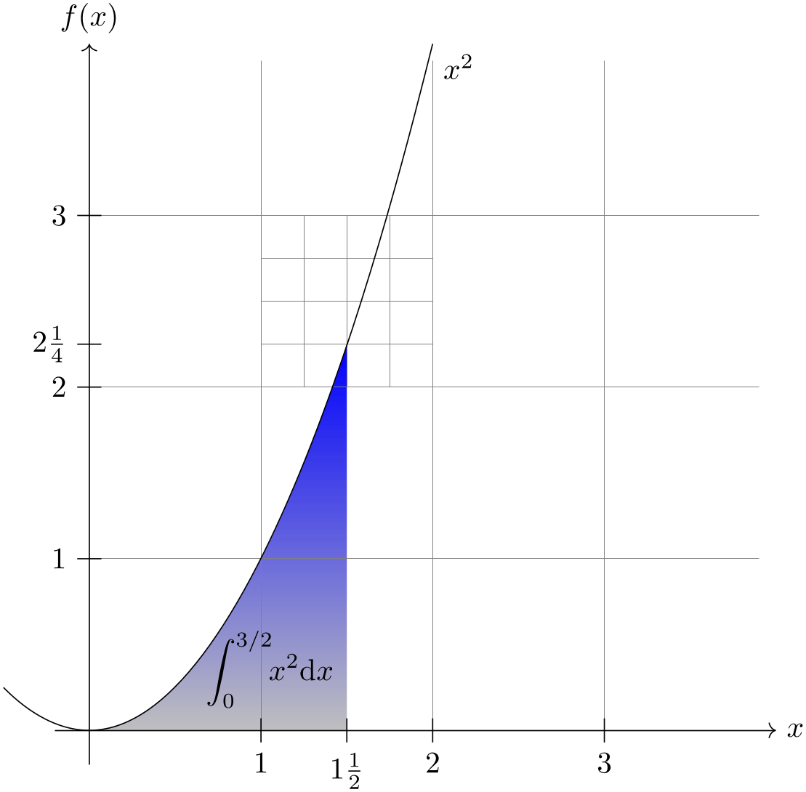

The TikZ and PGF Packages
Manual for version 3.1.10
Part VII Utilities
Sections
by Till Tantau
The utility packages are not directly involved in creating graphics, but you may find them useful nonetheless. All of them either directly depend on pgf or they are designed to work well together with pgf even though they can be used in a stand-alone way.

\begin{tikzpicture}[scale=2]
\shade[top color=blue,bottom color=gray!50] (0,0) parabola
(1.5,2.25) |-
(0,0);
\draw (1.05cm,2pt) node[above] {$\displaystyle\int_0^{3/2} \!\!x^2\mathrm{d}x$};
\draw[help lines] (0,0) grid
(3.9,3.9)
[step=0.25cm] (1,2) grid
+(1,1);
\draw[->] (-0.2,0) --
(4,0) node[right] {$x$};
\draw[->] (0,-0.2) --
(0,4) node[above] {$f(x)$};
\foreach \x/\xtext in
{1/1, 1.5/1\frac{1}{2}, 2/2, 3/3}
\draw[shift={(\x,0)}] (0pt,2pt) --
(0pt,-2pt) node[below] {$\xtext$};
\foreach \y/\ytext in
{1/1, 2/2, 2.25/2\frac{1}{4}, 3/3}
\draw[shift={(0,\y)}] (2pt,0pt) --
(-2pt,0pt) node[left] {$\ytext$};
\draw (-.5,.25) parabola
bend
(0,0) (2,4) node[below right] {$x^2$};
\end{tikzpicture}